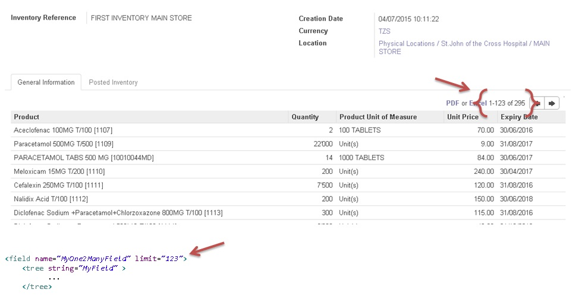

<section class="oe_container">
    <div class="oe_row oe_spaced">
        <div class="oe_span12">
            <h2 class="oe_slogan">One2Many Limit Enabler</h2>
            <h3 class="oe_slogan">Speed your customer's User Experience</h3>
        </div>
        <div class="oe_span6">
            <div class="oe_demo oe_picture oe_screenshot">
                
                <div class="oe_demo_footer oe_centeralign">Example</div>
            </div>
        </div>
        <div class="oe_span6">
            <p class="oe_mt32">
Allows you to define the pagination limit on one2many field default widget:
            </p>
            <p class="oe_mt32">
Example:
</p>
<pre><code>
&lt;field name="MyOne2ManyField" limit="123">
    &lt;tree string="MyField">
        ...
    &lt;/tree>
</code></pre>
            
        </div>
    </div>
</section>